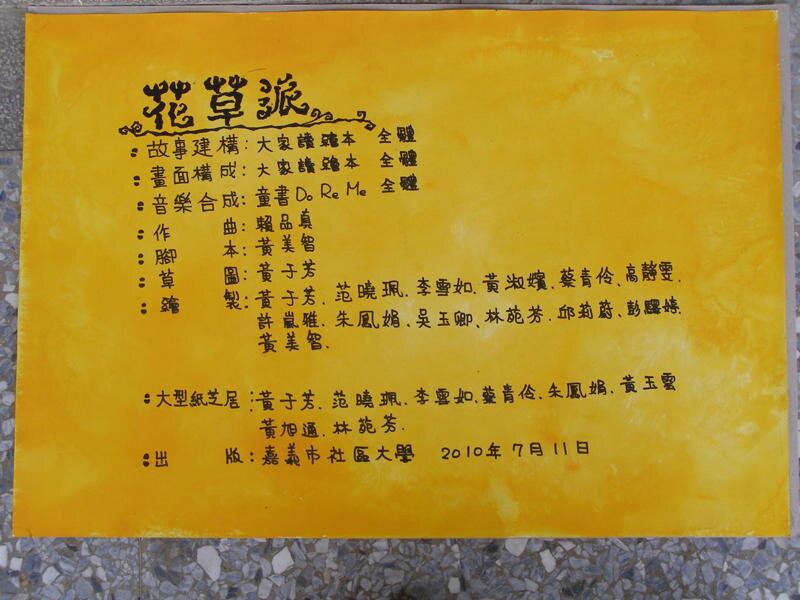

一隻愛踢球的小象玫瑰，遇上會溜冰又會彈琴的轉學生長頸鹿晶晶。媽媽提議送一個「最最最特別的花草派」，玫瑰卻以為派裡會放毛毛蟲。這本 2010 年社區大學學員手繪的繪本，現在由 晴晴、亭婷、淑嬪 重新說給你聽，亮晶晶 在舞台邊舉牌加油。
點一張演員卡，劇本會亮出這位演員的所有台詞，方便排練。再點一次取消。
錄下自己家的版本，或讓孩子直接問書裡的角色問題。
每一頁錄一段，切到「家族錄音」就會播放你們的聲音，台詞跟著聲音一句句亮起。錄音只存在這台裝置的瀏覽器裡。
選一個角色，問她任何關於故事的問題。由 Claude 依照故事內容扮演角色回答。
故事講完，換大家說說自己的想法。
